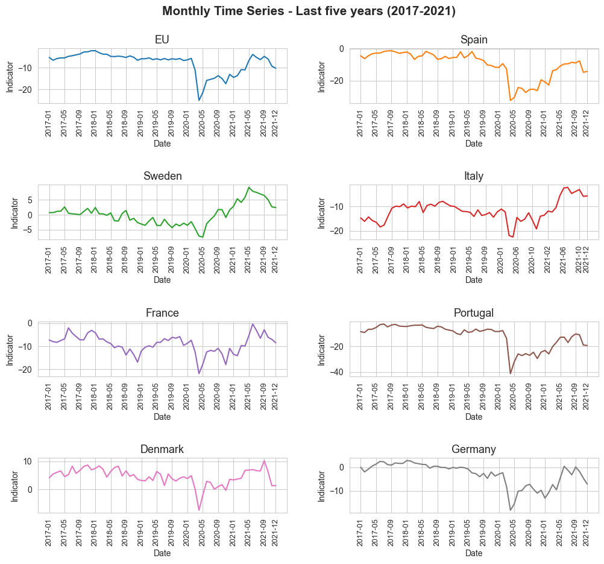
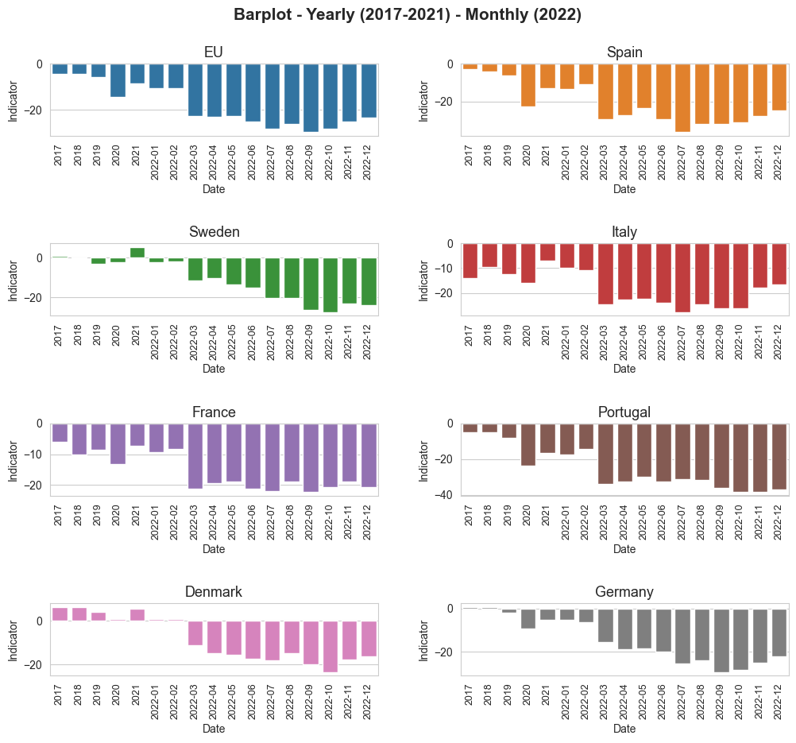

Extracting and analyzing data form Eurostat#
Requirements#
import requests
import pandas as pd
pd.options.mode.chained_assignment = None
import numpy as np
import seaborn as sns
import matplotlib.pyplot as plt
sns.set_style("whitegrid")
Extracting the data#
# Construct the URL according to Eurostat's API documentation specifics.
url = 'https://ec.europa.eu/eurostat/api/dissemination/statistics/1.0/data/ei_bsco_m?format=JSON&unit=BAL&indic=BS-CSMCI&s_adj=SA&lang=en'
# Send a request to the Eurostat API
response = requests.get(url)
data_json = response.json()
Processing the data#
indicator_dict = data_json['value']
geo_dict = data_json['dimension']['geo']['category']['index']
geo_dict_2 = data_json['dimension']['geo']['category']['label']
time_dict = data_json['dimension']['time']['category']['index']
n_time_ids = len(time_dict)
def indicator_id(geo_id, time_id):
result = geo_id*n_time_ids + time_id
return result
value_list = list()
geo_list = list()
time_list = list()
geo_values = [x for x in geo_dict.keys()]
time_values = [x for x in time_dict.keys()]
time_id_nan = data_json['extension']['positions-with-no-data']['time']
for geo_id in geo_dict.values() :
for time_id in time_dict.values() :
if time_id not in time_id_nan:
value_id = str(indicator_id(geo_id, time_id))
if value_id in indicator_dict.keys():
value_list.append(indicator_dict[value_id])
geo_list.append(geo_dict_2[geo_values[geo_id]])
time_list.append(time_values[time_id])
value_geo_time_dict = dict()
value_geo_time_dict['indicator'] = value_list
value_geo_time_dict['geo'] = geo_list
value_geo_time_dict['date'] = time_list
df = pd.DataFrame(value_geo_time_dict)
df['geo'] = df['geo'].replace({'European Union - 27 countries (from 2020)' : 'EU'})
df_geo = dict()
df_geo_2022 = dict()
df_geo_last_years = dict()
avg_indicator_groupby_year = dict()
df_geo_last_years_2022 = dict()
for geo in df['geo'].unique() :
df_geo[geo] = df.loc[df['geo'] == geo]
df_geo_2022[geo] = df_geo[geo].loc[(df_geo[geo]['date'] >= '2022-01') & (df_geo[geo]['date'] <= '2022-12'),:]
df_geo_last_years[geo] = df_geo[geo].loc[(df_geo[geo]['date'] >= '2017-01') & (df_geo[geo]['date'] <= '2021-12'),:]
df_geo_last_years[geo].loc[:,'year'] = df_geo_last_years[geo]['date'].apply(lambda x : x[0:4])
avg_indicator_groupby_year[geo] = df_geo_last_years[geo].groupby('year').mean('indicator').reset_index()
df_geo_last_years_2022[geo] = pd.concat([avg_indicator_groupby_year[geo].rename(columns={'year':'date'}), df_geo_2022[geo]]).drop('geo', axis=1)
avg_indicator_groupby_year[geo] = avg_indicator_groupby_year[geo].rename(columns={'indicator': 'avg_indicator'})
selected_geos = ['EU', 'Spain', 'Sweden', 'Italy', 'France', 'Portugal', 'Denmark', 'Germany']
print('---------------------------------------------------------------------------------------')
print('Selected Countries for the analysis: ', selected_geos)
print('--------------------------------------------------------------------------------------')
print('Just for getting and idea of how the dictionaries of data-frames generated from Eurostat looks like (they will be run only with EU and Spain, just for simplicity):')
print('---------------------------------------------------------------------------------------')
for geo in ['EU', 'Spain']:
print(f'df_geo[{geo}]\n')
print(df_geo[geo])
print('---------------------------------------------------------------------------------------')
print(f'df_geo_2022[{geo}]\n')
print(df_geo_2022[geo])
print('---------------------------------------------------------------------------------------')
print(f'avg_indicator_groupby_year[{geo}]\n')
print(avg_indicator_groupby_year[geo])
print('---------------------------------------------------------------------------------------')
print(f'df_geo_last_years_2022[{geo}]\n')
print(df_geo_last_years_2022[geo])
print('---------------------------------------------------------------------------------------')
print('---------------------------------------------------------------------------------------')
#################################################################
---------------------------------------------------------------------------------------
Selected Countries for the analysis: ['EU', 'Spain', 'Sweden', 'Italy', 'France', 'Portugal', 'Denmark', 'Germany']
--------------------------------------------------------------------------------------
Just for getting and idea of how the dictionaries of data-frames generated from Eurostat looks like (they will be run only with EU and Spain, just for simplicity):
---------------------------------------------------------------------------------------
df_geo[EU]
indicator geo date
0 -10.3 EU 1985-01
1 -10.7 EU 1985-02
2 -11.5 EU 1985-03
3 -10.9 EU 1985-04
4 -11.3 EU 1985-05
.. ... .. ...
466 -17.5 EU 2023-11
467 -15.9 EU 2023-12
468 -16.2 EU 2024-01
469 -15.8 EU 2024-02
470 -15.2 EU 2024-03
[471 rows x 3 columns]
---------------------------------------------------------------------------------------
df_geo_2022[EU]
indicator geo date
444 -10.8 EU 2022-01
445 -10.7 EU 2022-02
446 -22.6 EU 2022-03
447 -23.2 EU 2022-04
448 -22.8 EU 2022-05
449 -25.3 EU 2022-06
450 -28.3 EU 2022-07
451 -26.1 EU 2022-08
452 -29.7 EU 2022-09
453 -28.4 EU 2022-10
454 -25.0 EU 2022-11
455 -23.5 EU 2022-12
---------------------------------------------------------------------------------------
avg_indicator_groupby_year[EU]
year avg_indicator
0 2017 -4.358333
1 2018 -4.391667
2 2019 -5.958333
3 2020 -14.508333
4 2021 -8.458333
---------------------------------------------------------------------------------------
df_geo_last_years_2022[EU]
date indicator
0 2017 -4.358333
1 2018 -4.391667
2 2019 -5.958333
3 2020 -14.508333
4 2021 -8.458333
444 2022-01 -10.800000
445 2022-02 -10.700000
446 2022-03 -22.600000
447 2022-04 -23.200000
448 2022-05 -22.800000
449 2022-06 -25.300000
450 2022-07 -28.300000
451 2022-08 -26.100000
452 2022-09 -29.700000
453 2022-10 -28.400000
454 2022-11 -25.000000
455 2022-12 -23.500000
---------------------------------------------------------------------------------------
df_geo[Spain]
indicator geo date
4287 -7.1 Spain 1986-06
4288 -7.2 Spain 1986-07
4289 -6.4 Spain 1986-08
4290 -7.2 Spain 1986-09
4291 -7.6 Spain 1986-10
... ... ... ...
4736 -19.3 Spain 2023-11
4737 -18.5 Spain 2023-12
4738 -18.7 Spain 2024-01
4739 -17.3 Spain 2024-02
4740 -16.0 Spain 2024-03
[454 rows x 3 columns]
---------------------------------------------------------------------------------------
df_geo_2022[Spain]
indicator geo date
4714 -13.3 Spain 2022-01
4715 -10.9 Spain 2022-02
4716 -29.3 Spain 2022-03
4717 -27.4 Spain 2022-04
4718 -23.7 Spain 2022-05
4719 -29.4 Spain 2022-06
4720 -36.2 Spain 2022-07
4721 -31.9 Spain 2022-08
4722 -32.0 Spain 2022-09
4723 -30.9 Spain 2022-10
4724 -27.6 Spain 2022-11
4725 -24.8 Spain 2022-12
---------------------------------------------------------------------------------------
avg_indicator_groupby_year[Spain]
year avg_indicator
0 2017 -2.900000
1 2018 -4.408333
2 2019 -6.366667
3 2020 -22.541667
4 2021 -12.866667
---------------------------------------------------------------------------------------
df_geo_last_years_2022[Spain]
date indicator
0 2017 -2.900000
1 2018 -4.408333
2 2019 -6.366667
3 2020 -22.541667
4 2021 -12.866667
4714 2022-01 -13.300000
4715 2022-02 -10.900000
4716 2022-03 -29.300000
4717 2022-04 -27.400000
4718 2022-05 -23.700000
4719 2022-06 -29.400000
4720 2022-07 -36.200000
4721 2022-08 -31.900000
4722 2022-09 -32.000000
4723 2022-10 -30.900000
4724 2022-11 -27.600000
4725 2022-12 -24.800000
---------------------------------------------------------------------------------------
---------------------------------------------------------------------------------------
Plotting the results#
# Define the number of rows and columns for the matrix plot
num_cols = 2 # You can adjust the number of columns as needed
num_rows = int(np.ceil(len(selected_geos) / num_cols))
# Create a subplot with the specified number of rows and columns
fig, axes = plt.subplots(num_rows, num_cols, figsize=(12, 10))
# Flatten the axes array to make it easier to iterate
axes = axes.flatten()
colors = sns.color_palette("tab10", len(selected_geos))
# Loop through each 'geo' and create a subplot in the matrix
for (i, geo), color in zip(enumerate(selected_geos), colors) :
ax = axes[i] # Get the current axis
sns.lineplot(x="date", y="indicator", data=df_geo_last_years[geo], color=color, ax=ax)
ax.set_title(f"{geo}", fontsize=13)
xticks_index = np.arange(0, len(df_geo_last_years[geo]), 4)
xticks_index = xticks_index.tolist()
xticks_index.append(len(df_geo_last_years[geo])-1)
ax.set_xticks(xticks_index)
ax.tick_params(axis='x', rotation=90, labelsize=9)
ax.set_xlabel('Date')
ax.set_ylabel('Indicator')
# Remove any unused subplots in case the number of 'geo' values is less than num_rows * num_cols
for j in range(len(selected_geos), num_rows * num_cols):
fig.delaxes(axes[j])
plt.suptitle('Monthly Time Series - Last five years (2017-2021)', fontsize=15, y=0.95, weight='bold') # Establishing a general tittle for the plot.
plt.subplots_adjust(hspace=1.5, wspace=0.25) # Adjust vertical (hspace) and horizontal (wspace) spacing
# fig.savefig('mothly_time_series_last_five_years' + '.jpg', format='jpg', dpi=550)
# plt.tight_layout()
plt.show()

# Define the number of rows and columns for the matrix plot
num_cols = 2 # You can adjust the number of columns as needed
num_rows = int(np.ceil(len(selected_geos) / num_cols))
# Create a subplot with the specified number of rows and columns
fig, axes = plt.subplots(num_rows, num_cols, figsize=(12, 10))
# Flatten the axes array to make it easier to iterate
axes = axes.flatten()
colors = sns.color_palette("tab10", len(selected_geos))
# Loop through each 'geo' and create a subplot in the matrix
for (i, geo), color in zip(enumerate(selected_geos), colors) :
ax = axes[i] # Get the current axis
sns.barplot(x="date", y="indicator", data=df_geo_last_years_2022[geo], color=color, ax=ax)
ax.set_title(f"{geo}", fontsize=13)
xticks_index = np.arange(0, len(df_geo_last_years_2022[geo]), 1)
ax.set_xticks(xticks_index)
ax.tick_params(axis='x', rotation=90, labelsize=9)
ax.set_xlabel('Date')
ax.set_ylabel('Indicator')
# Remove any unused subplots in case the number of 'geo' values is less than num_rows * num_cols
for j in range(len(selected_geos), num_rows * num_cols):
fig.delaxes(axes[j])
plt.suptitle('Barplot - Yearly (2017-2021) - Monthly (2022)', fontsize=15, y=0.95, weight='bold') # Establishing a general tittle for the plot.
plt.subplots_adjust(hspace=1.5, wspace=0.25) # Adjust vertical (hspace) and horizontal (wspace) spacing
# fig.savefig('barplot_last_five_years_and_2022' + '.jpg', format='jpg', dpi=550)
# plt.tight_layout()
plt.show()
